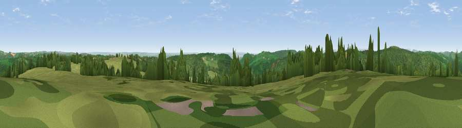

Hart Hill
#11101 in England · top 19% of its area beats it · near BrockweirThe view, rendered

A 360° render of this exact spot computed from the terrain model, tree cover and land cover — summer colours, afternoon light, calibrated against photographs of famous viewpoints. Real trees, hedges and buildings will differ in detail.
The panorama
Grey silhouette: terrain skyline in each direction (720 bearings, Earth curvature and refraction included). Dashed green: skyline with trees (+15 m) and buildings (+8 m) as obstacles. Blue strip: how far the ground is visible on each bearing.
Where the view opens
Wedge length = distance to the farthest visible ground on that bearing (vegetation-aware). Rings at 10, 25 and 50 km.
What fills the view
56% woodland · 39% grassland · 4% cropland ·
Angular shares of the visible panorama (visual magnitude), not map area. Landscape diversity 0.38 (0–1 Shannon).
Key numbers
More beautiful places nearby
The staircase of upgrades: each row has a higher view potential than everything closer. Driving times are estimates from straight-line distance, calibrated against real road routing — check an actual route before setting out.
| Place | Direction | Drive | Score |
|---|---|---|---|
| Viewpoint near Hewelsfield | ESE · 4 km | ~9 min | 69.4 |
| Viewpoint near Hewelsfield | ESE · 4 km | ~9 min | 70.7 |
| Buck Stone | N · 9 km | ~18 min | 71.0 |
| Viewpoint near Welsh Newton | NNW · 13 km | ~24 min | 72.0 |
| Viewpoint near Goodrich | NNE · 16 km | ~28 min | 74.0 |
| Skenchill | NNW · 16 km | ~29 min | 75.8 |
| Viewpoint near Stinchcombe | ESE · 20 km | ~34 min | 78.7 |
| Viewpoint near Stinchcombe | ESE · 20 km | ~34 min | 79.4 |
51.72541, -2.66557 · source: dobih hill · position refined by local search. Computed location — check access rights before visiting.